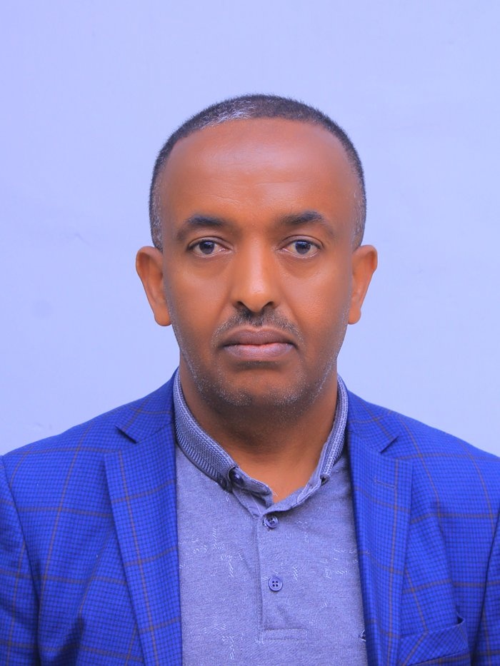

Department of Mathematics · Addis Ababa University
Zelalem Teshome Wale
Associate Professor of Mathematics working in fuzzy algebra, soft algebra, fuzzy geometry, and lattice theory — with two decades in university teaching, curriculum leadership, and academic administration in Ethiopia.

ADDIS ABABA, ETHIOPIA
About
Two decades at the chalkboard and the department office.
A career built on ordered structures — in algebra, and in the institutions that teach it.
Dr. Zelalem Teshome Wale is an Associate Professor in the Department of Mathematics, College of Natural and Computational Sciences, at Addis Ababa University. His research sits at the intersection of fuzzy set theory, soft set theory, and lattice theory — the mathematics of structures whose elements are ordered, graded, or uncertain rather than sharply defined.
Since completing his PhD at Andhra University in 2011, he has published widely on I-vague sets and groups, soft modules and soft lattices, PMS-algebras, and generalised lattice-ordered groups, alongside a parallel line of work on mathematics education and secondary-school assessment in Ethiopia.
Beyond research, he has held sustained leadership roles: department headship at two universities, faculty deanship, curriculum committee chairmanship, and — currently — Research and Engagement Coordinator for the Department of Mathematics at AAU.
Education
PhD in Mathematics
Thesis: A Theory of I-Vague Sets. Advisor: Prof. Ranga Rao.
MSc in Mathematics
BSc in Mathematics
Research Interests
Research Areas.
Each area recurs across the publication record below, often in combination — a soft lattice paper, for instance, sits between soft algebra and lattice theory.
Fuzzy Algebra
Soft Algebra
Fuzzy Geometry
Lattice Theory
Mathematics Education
Work Experience
From secondary-school teacher to associate professor.
Associate Professor
Addis Ababa University
MARCH 07, 2024 — PRESENT
Assistant Professor
Addis Ababa University
AUG 09, 2011 — MARCH 06, 2024
Lecturer
Addis Ababa University
JULY 20, 2005 — AUG 08, 2011
Lecturer
Jimma University
NOV 20, 1997 — JULY 19, 2005
Teacher
Goro Comprehensive Secondary School
SEPT 1990 — AUG 1994; SEPT 1990 — NOV 19, 1997
Academic Leadership & Service
Departments, faculties, and committees.
Academic Services
Research and Engagement Coordinator
Department of Mathematics, AAU
MARCH 2025 — PRESENT
Head, Department of Mathematics
Addis Ababa University
OCT 01, 2014 — OCT 11, 2016
Coordinator, Computational Sciences Program
Addis Ababa University
MAY 15, 2013 — FEB 12, 2014
Graduate Extension Program Coordinator
Addis Ababa University
SEPT 11, 2011 — AUG 2012
Dean, Faculty of Education
Jimma University
NOV 14, 2002 — JULY 19, 2005
Vice Dean, Faculty of Education
Jimma University
APR 09, 2002 — NOV 13, 2002
Deputy Coordinator, Basic Sciences Program
Jimma University
NOV 11, 2000 — APR 08, 2002
Head, Department of Mathematics
Jimma University
APR 18, 1998 — NOV 10, 2000
Committees
- Secretary, Department Strategic Planning Committee
- Member, Department Academic Committee
- Member, Interim Department Academic Committee
- Chairman, BSc Curriculum Review Committee
- Secretary, BEd Curriculum Review Committee
- Chairman, Adhoc Staff Promotion Committee
- Chairman, Adhoc Staff Recruitment Committee
- Member, Department Graduate Committee
PhD / MSc Advising
- PhD students completed
- PhD students in progress
- MSc students supervised
Professional Activities
- Associate Editor, SINET — Ethiopian Journal of Science
- Reviewer, International Electronic Journal of Mathematics Education
- Member of Advisory Board, Ethiopian Journal of Education and Sciences
- Board Chair, Abinet Academy
- Project Director, Consultancy for Preparation & Digital Recording of Advanced Level CPM Modules for Web-based Training Delivery
- Vice President, Mathematical Association of Ethiopia
- PhD Thesis Examiner — "L-Fuzzy Ideals and Filters of a Poset," Bahir Dar University
- PhD Thesis Examiner — "L-Fuzzy Ideals and L-Fuzzy Congruence Relations in Universal Algebra," Bahir Dar University
- PhD Thesis Examiner — "Fuzzy Congruence Relations on a Fuzzy Lattice and Fuzzy Lattice Ordered Group Based on Fuzzy Partial Ordering Relations," Arba Minch University
- Finance Committee Head, Jimma University Workers Saving and Credit
- Critical Reviewer, PhD Program in Mathematics, Jimma University
- Tutorial Program Participant, Gender Office, CNCS, Addis Ababa University
- Member, Mathematics Panel of Experts, Science & Technology English–Amharic Dictionary Translation Project
- Reviewer, Undergraduate Text in Mathematics — Transformation Geometry
- Conference Organizer, Ethiopian Mathematics Professionals Association
- Reviewer, MSc Curriculum in Mathematics (Algebra)
Peer-Reviewed Publications
32 papers, 2009 – 2026.
Search by title, journal, or co-author. Results update as you type.
2026
Construction of Soft Modules over Soft Abelian Groups
2025
Soft Lattices Based on Soft Binary Operations
The Spectral Space of H-Fuzzy Prime Ideals in Distributive Join Semilattices
Group Structures and Derivations on PMS-algebras
On t-derivations of PMS-algebras
On the Greenlees–May Duality and the Matlis–Greenlees May Equivalence
Ethiopia's Secondary School Leaving Examinations System: A Glimpse Inside its Governance, Management, and Potential Consequences
On f-derivations, Regular f-derivations and Semigroup of f-derivations on PMS-algebras
2024
Fuzzy Points in Fuzzy Geometry Redefined
Fuzzy Generalised Lattice Ordered Groups (Fuzzy gl-Groups) Based on a Fuzzy Partial Ordering Relation (Fuzzy Porel)
L-valued Intuitionistic L-fuzzy Generalised Lattice Ordered Groups of the Type 3
Soft Homomorphisms on Soft Groups
A New Approach to Soft Groups Based on Soft Binary Operations
2023
Soft PMS Algebras
Planting the Seeds of Innovative E-learning Platform in Higher Education Institutions in Ethiopia: The Case of ET Online College
2020
I-vector Spaces
2017
On I-Vague Products
Weak Positive Implicative BRK-Algebras
2015
Functional in R-Vector Spaces
Perception of Civil Engineering Extension Students of AAU Institute of Technology in the Teaching of Applied Mathematics
2014
Special Homomorphisms in R-Vector Spaces
2013
Aspects of Plasma Television Supported Learning in Mathematics Classes in Selected Ethiopian High Schools
Ideals in Semi-Brouwerian Algebras
2012
Boolean Like Semirings of Fractions
Status of Satellite Television Broadcast Programs Implementation in Mathematics and Science Subjects in Ethiopian Government High Schools from Teachers' Perspective
2011
I-Vague Ideal Theory of Rings
I-Vague Ideal Theory of Subtraction Algebras
I-Vague Normal Groups
I-Vague Groups
Students' Perception of Mathematics and Science Plasma Lessons in Ethiopian Government Schools
2010
I-Vague Sets and I-Vague Relations
2009
Developing Skills of Giving and Receiving Feedback Between Students and Teachers
No publications match your search.
Recognition & Development
Award, training, and conference record.
Best Instructor Award
Training Certificates
Conference Presentations
- "Ideals in Semi-Brouwerian Algebras," Meeting National Development Challenges through Science, Technology and Innovations, Jimma University
Conference Participation
- African Women Mathematics Association
- Complex Analysis and Partial Differential Equations, AAU
- Regional Cross Moderation Workshop
- Regional Cluster Workshop
- Moderation Workshop for Higher Diploma Leaders and Tutors
Contact
Open to research collaboration, thesis examination, and journal review.
Address
Dr. Zelalem Teshome Wale
Associate Professor, Department of Mathematics
College of Natural and Computational Sciences
Addis Ababa University
P.O. Box 1176, Addis Ababa, Ethiopia